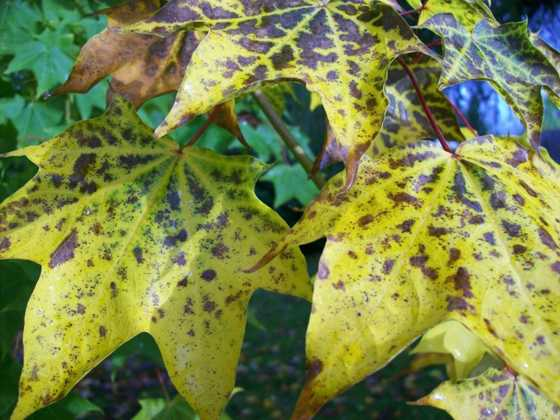
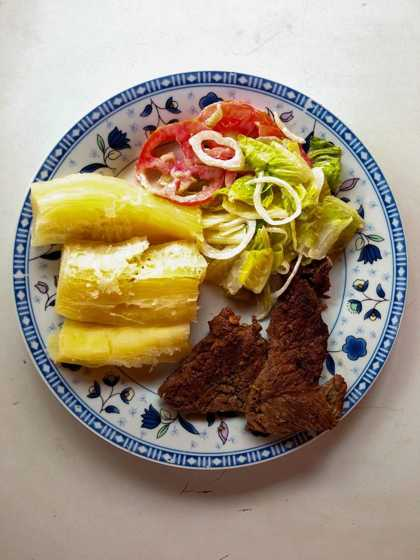
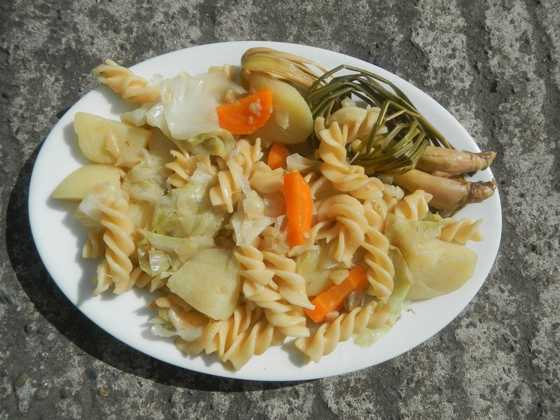
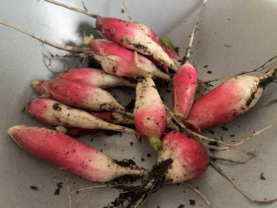
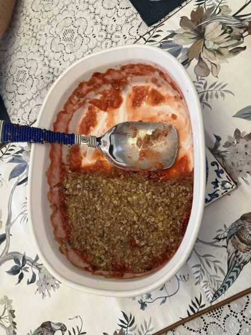

長岡京市・奥海印寺 / CAFE COTOCOTO
おうちごはんで、ほっこり。
住宅地の小さなカフェ。
「ほっこりできる場所を作りたい」という思いから、自然豊かな奥海印寺の住宅地で始まったカフェです。
※コンセプト文は、確認できたお店の紹介をもとに制作側がまとめたものです。
アクセスInstagramを見る
お店のこと
コトコトは、京都府長岡京市の奥海印寺にあるカフェです。市内でも自然豊かなエリアの住宅地で、「ほっこりできる場所を作りたい」という思いから開店したと紹介されています。Instagramのプロフィールには「おうちごはんでほっこりしてもらえるお店です」とあります。
ランチは11時から14時、10時から11時と14時から16時はカフェタイムと案内されています。
店名「コトコト」の由来・意味は確認できていないため、ここでは触れません。



メニュー
価格・最新の内容は準備中です。最新情報はInstagramでご確認ください。







口コミ(イメージ例)
以下は制作側が作成したイメージ例であり、実際のお客様の声ではありません。
イメージ例
散歩の途中でふらりと入りました。家で食べているようなごはんで、ほっとしました。
イメージ例
ランチのあとにスイーツまでゆっくり。静かな住宅地の雰囲気が心地よかったです。
イメージ例
日替わりの内容が楽しみで、また来たくなるお店です。
アクセス
- 住所
- 〒617-0853 京都府長岡京市奥海印寺火ノ尾37-12
- 電話
- 準備中
- 営業
- 木・金・土 10:00〜16:00と紹介されています。最新はInstagramをご確認ください。
- 交通
- 阪急バス「海印寺」から徒歩約2分と紹介されています。駐車場は2台分とのことです。
- SNS
- Instagram @cafe_cotocoto
写真クレジット
写真はフリー素材のイメージで、店舗の実際の様子ではありません。海外で撮影されたものや、撮影地が不明なものを含みます。縮小などの加工をしています。
- images/ct-lunch-plate.jpg「Almuerzo criollo」 Muago / CC0 / 撮影地: 不明 / 出典 / creativecommons.org(CC0 1.0)
- images/ct-casserole.jpg「0811Potatoes, carrots and cabbage with fusilli in lemon grass casserole 02」 Judgefloro / CC0 / 撮影地: フィリピン(座標より) / 出典 / creativecommons.org(CC0 1.0)
- images/ct-carrots.jpg「Fresh Carrots」 Yerson Retamel / CC0 / 撮影地: 不明 / 出典 / creativecommons.org(CC0 1.0)
- images/ct-radishes.jpg「Confinement 2020 - modeste première récolte de radis」 Benoît Prieur / CC0 / 撮影地: フランス(座標より) / 出典 / creativecommons.org(CC0 1.0)
- images/ct-financier.jpg「Chocolate financier」 Syced / CC0 / 撮影地: 不明 / 出典 / creativecommons.org(CC0 1.0)
- images/ct-mocha-cake.jpg「Mocha Cake - Djanogly Café, Tate Britain 2026-03-24」 Andy Li / CC0 / 撮影地: 英国(座標・題名より) / 出典 / creativecommons.org(CC0 1.0)
- images/ct-crumble.jpg「Strawberry crumble dessert partially eaten Easter Sunday 2025」 Eastmain / CC0 / 撮影地: カナダ(座標より) / 出典 / creativecommons.org(CC0 1.0)
- images/ct-tea-cup.jpg「Cup of tea isolated on white background」 Petr Kratochvil / CC0 / 撮影地: 不明 / 出典 / creativecommons.org(CC0 1.0)
- images/ct-curtain.jpg「Window frame shadow on a curtain (Unsplash)」 Steinar Engeland / CC0 / 撮影地: ノルウェー(座標より) / 出典 / creativecommons.org(CC0 1.0)
- images/ct-meadow.jpg「Meadow in Niederfinow 2021-07-17 08」 Leonhard Lenz / CC0 / 撮影地: ドイツ(題名より) / 出典 / creativecommons.org(CC0 1.0)
- images/ct-forest-path.jpg「Forest path in Galovići, Serbia」 Beanbeans424 / CC0 / 撮影地: セルビア(題名より) / 出典 / creativecommons.org(CC0 1.0)
- images/ct-maple.jpg「Maple leaves in autumn 2」 Poliphilo / CC0 / 撮影地: 不明 / 出典 / creativecommons.org(CC0 1.0)